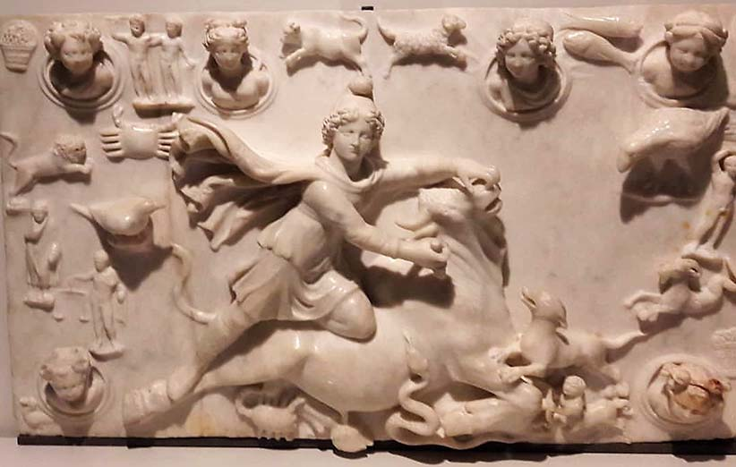

شب یلدا و مسیحیت
مذاهب مختلف مسیحی، میلاد مسیح را در یکی از روزهای نزدیک به انقلاب زمستانی برگزار میکنند. سال نو آنها که در یازدهم دیماه شروع میشود، نزدیک به شب یلدا است. برخی از تاریخپژوهان و باستانشناسان عقیده دارند که تقویم میلادی با اندک تغییراتی، ادامه میلاد خورشید بوده که بعدها آن را به میلاد مسیح نسبت دادهاند. از دیدگاه آنها، این تقویم در روم، در قرن چهارم پس از میلاد به وجود آمده است.
ممکن است بپرسید میترائیسم چه ارتباطی با روم و مسیحیت دارد؟! در روم باستان، تولد خدای خورشید شکست ناپذیر، (سول اینویکتوس) را در روز انقلاب زمستانی جشن میگرفتند. این خدای رومی ترکیبی از خدای خورشید و میترای آیین مهرپرستی بود. میترائیسم چگونه به روم راه پیدا کرد؟ میگویند در زمانی که آیین زرتشت دین رسمی ایران شد، مهر پرستان در منطقه آسیای صغیر محدود شدند. در قرن اول قبل از میلاد، رومیها آسیای صغیر را تصرف کردند. این آیین به واسطه اسیران جنگی به تدریج در روم گسترش یافت. مهرپرستی یا میترائیسم، کمکم جای خود را در بین تجار، لشکریان و حتی امپراتوران روم باز کرد؛ تا جایی که در آغاز قرن چهارم، بیش از سیصد معبد میترایی در ایتالیا برپا بود. در آن زمان بیشتر رومیان، شب یلدا را جشن میگرفتند. در نهایت امپراتور روم، کنستانتین اول به خاطر علاقهاش به مسیحیت، در سال ۳۱۳، فرمان آزادی این دین را در روم صادر کرد. او میلاد میترا را به میلاد مسیح تغییر داد. استدلالش این بود که مسیحیان در تاریخ تولد عیسی ابهام دارند و عیسی مظهر نور است. پس باید روز تولد خورشید همان میلاد مسیح باشد. و تاریخ تولد عیسی را روز ۲۲ دسامبر تعیین نمود؛ همان روز تولد میترا. این تاریخ، به دلیل اختلاف در محاسبات کبیسهگیری، بعداً به ۲۵ دسامبر تغییر یافت. پیش از این، تولد مسیح را روز ۶ یا ۷ ژانویه میدانستند. امروزه هم مسیحیان ارمنی در همین روز تولد مسیح را جشن میگیرند. کارل یونگ، روانشناس مشهور سوئیسی دربارهی میترائیسم نظراتی داشت. او در کتاب «نماد تحول» به شکلی گسترده دربارهی اثرات میترائیسم بر مسیحیت توضیح داده است. اگر علاقمند باشید بیشتر در این زمینه تحقیق کنید، تصاویر و نمادهای مربوط به این موضوع را در پنجمین جلد از این مجموعه آثار، پیدا میکنید.